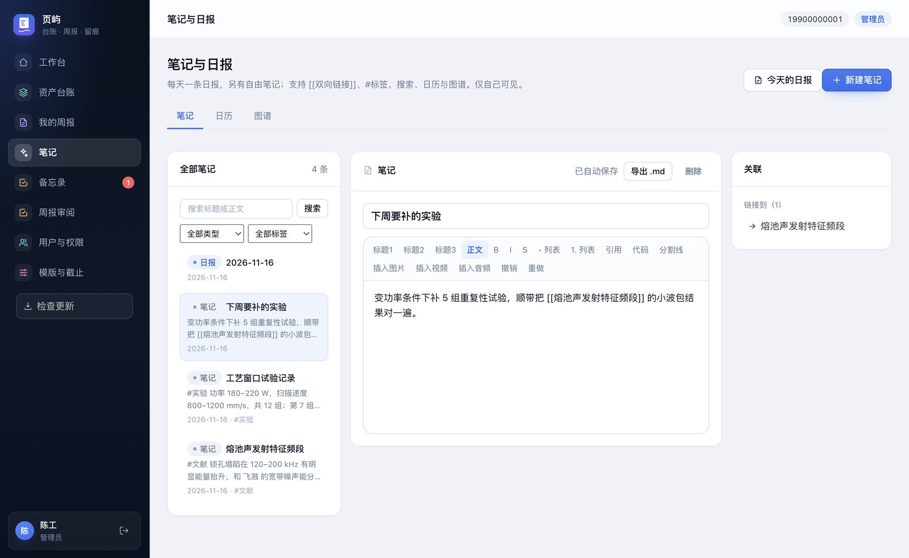

一页一屿，
连成你自己的群岛
设备在谁手上、这周做了些什么、那句想法记在哪、还有哪件事没做完—— 这些记录本来散在群聊、表格、便签和脑子里。页屿把它们一页页收好，连成一片你自己看得懂的海域。

「页」是记录，「屿」是岛。
一条记录单看没什么，像一座孤零零的小岛：一张设备表、一份周报、半页笔记、一句「下周问一下」。 让它们落在同一片水域里，才看得出地形——你在哪块地上做过什么、东西最后停在哪、那件事到底做完了没有。
这就是页屿：让散落的页面，连成你自己的群岛。
换个行业，麻烦长得一模一样
那台雕刻机去哪了
翻三个群、问五个人，最后发现它在隔壁工位，插着别人的线，刀头还没卸。
周五下午的周报
翻聊天记录和相册，把一周重新拼一遍，再对着上周的模版改格式、调标题。
客户那句「要浅一点」
写在收银小票背面，三天后翻不到，只能重做一版，还不敢说是因为忘了。
挨个问交没交
点开一个个头像问「你的进度呢」，问完还得自己数：谁没交、谁交的是草稿、谁交错了周。
名字换了，麻烦是一样的：东西在谁手上、事情做到哪、那句话记在哪。 页屿把它们收进同一个窗口——不是为了多装一个软件，是为了少四次追问。
四件事，一个窗口
设备要登记、进度要交代、想法要留住、事情要有人跟。四块都能单独用，合起来才顺：查到东西就知道谁负责，点开人就知道他这周交没交。
台账：设备 · 物料 · 库存
谁在用、放在哪、值多少钱、保修到几时，一屏看清。成员只能改自己负责的那几行；借用归还、盘点差异、每次修改都留痕。手里有 Excel 就导入，迁移不费劲。
周期汇报：周报 / 月报 / 日报
把现有的 Word 模版传上去，页屿自己认得出小节；你只管往每节里填，图直接贴。截止时间按「周几几点」算，每周交、单双周交、还是只交月报，都能设。
笔记与日志
每天一页，想到什么随手记。[[双向链接]] 把零散记录连成网，#标签、全文搜索、日历和关系图帮你把「好像记过」变成「找得到」。想搬走就导出 Markdown。
待办与提醒
「下周问一下设备进度」这种话，记下来就不会忘。到点软件里提醒你，同一条只响一次；过了期的事红着摆在那儿，侧边栏也挂着角标。
成员与分组
手机号注册、管理员审批，谁在用一清二楚。按部门、方向或班组建组，筛选、分派、统计都跟着组走——设备归属也自动跟着人走。
音视频与附件
会议录像、设备异响的录音，直接拖进笔记或汇报里就能播放，不用再去文件夹里翻。合同、发票、照片也能挂着，缺什么一眼看得出来。
谁用得上
它解决的不是「某个行业的问题」，而是「一群人共用东西、需要交代进度、又怕把话忘了」这件事。
课题组 / 实验室
仪器台账、共用的采集卡与探头、按模版写的周报、实验日志与录音。
工作室 / 小团队
共用设备谁借走的、项目做到第几步、客户提的要求原话是什么。
车间 / 仓库
物料与工具登记、盘点差异、交接班记录、谁的活还没干完。
门店 / 诊所
固定资产与保修期、值班与交接记录、客户偏好与注意事项。
社团 / 志愿组织
成员名录与分组、活动记录与照片、物资借还、下一次会议待办。
家庭 / 个人
贵重物品与保修、家务与缴费待办、读书笔记与随手记。
长这样
桌面客户端（macOS / Windows）。登录是一个 400×500 的小窗，进去之后左边导航、右边干活，没有二次跳转。下面的截图是演示数据。




它是什么
- 一个能自己跑起来的软件：一个容器 + 一个 SQLite 文件，不需要单独装数据库
- 数据在你手里：库和附件就是一个目录，备份 = 拷走
app.db和uploads/ - 开源的：MIT，代码全在 GitHub，不满意可以自己改
- 局域网就能用：办公室几台电脑连一台机器即可，不依赖任何外部云服务
它不是什么
- 不是云服务：没有账号托管，也没有把数据传出去的地方
- 不是万能系统：没有多租户、没有 OCR、没有短信找回密码，也不做财务记账
- 不支持多实例：SQLite 单文件，一台机器一个库；要横向扩容得换 PostgreSQL
- 安装包没签名：mac 首次打开要右键「打开」，或执行一条
xattr
装在自己的服务器上，两条命令
服务端是 Fastify + SQLite 单文件，不用另装 MySQL / PostgreSQL：
数据库就是容器里的 /data/app.db，启动时自动建表。把库和附件放进同一个卷，备份也只需这两样。
cd deploy cp .env.example .env # 填 JWT_SECRET（必填） docker compose up -d --build # 首次启动自动建库建表 docker compose exec server pnpm exec tsx prisma/seed.ts # 创建首个管理员 curl http://127.0.0.1:4000/api/health